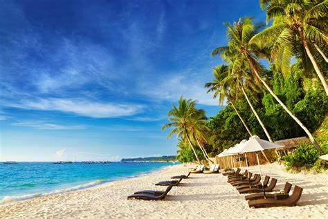
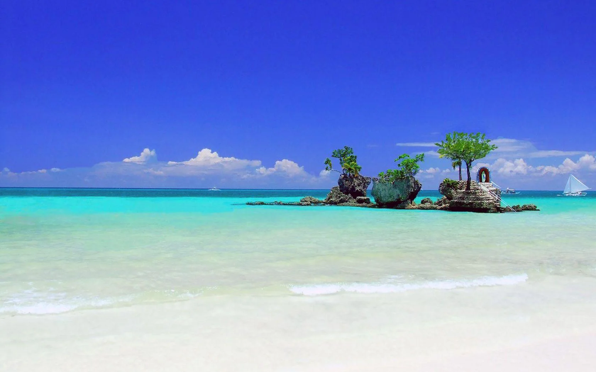
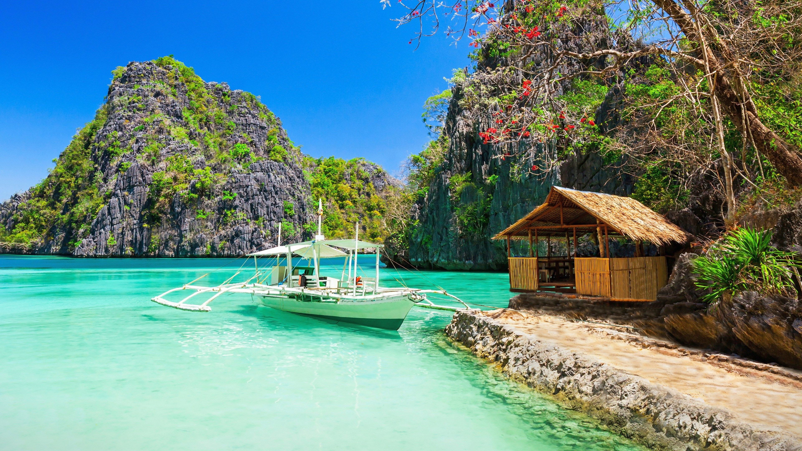
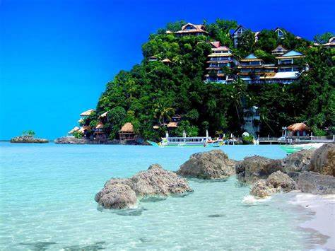

Boracay Island, one of the top beaches in the Philippines and one of the best Visayas tourist spots, is blessed with a long stretch of powdery white sand beach (called White Beach), crystal clear and azure waters, and a stunning sunset. Boracay is a tropical island in the Philippines that is famous for its white sand beaches, clear blue waters, and stunning sunset. It is located off the coast of Panay island and can be reached by an hour's flight from Cebu or Manila1. Boracay is one of the top islands in the Philippines and has won multiple awards for its beauty and charm.
   

© 2023 Kjieldsen Joy S. Esteban